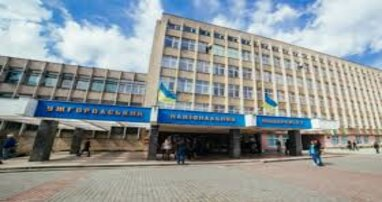
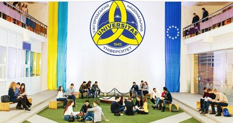
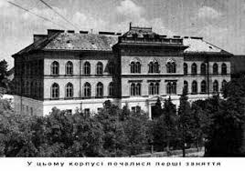
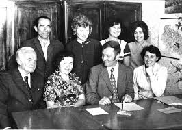

Наші університети
Більше...


Історія УжНУ
Більше...


Наші студенти
Більше...Винаходи
Більше...
Close
Історія ВНЗ УжНУ
Історія відкриття вищого навчального закладу на Закарпатті вельми цікава. Перебуваючи в складі різних держав (Угорщина, Австрійська імперія, Австро-Угорщина, Чехословаччина), спроб організації вищої освіти було чимало. Вперше про це було відкрито заявлено на І-му слов’янському з’їзді в Празі 7 червня 1848, на якому були задекларовані наміри створити спочатку богословські, вчительські семінарії, а згодом і вищі інститути-гімназії, ліцеї, університет. На жаль, ці вимоги не були задоволені, тому 13 жовтня того ж 1848 року група закарпатських культурних діячів на чолі з А. Добрянським звернулися до австрійського імператора з проханням надати дозвіл на відкриття вищого навчального закладу в м. Ужгороді. Ці заяви спіткала та ж доля, що і попередні. Не покидала надія закарпатців щодо вирішення цього питання, а навпаки, ентузіазму побільшало після входження краю до складу Чехословаччини. Вже 24 грудня 1919 року у рішенні автономної директорії Підкарпатської Русі було зафіксовано про необхідність заснування в Ужгороді «руського університету», на якому мали б діяти 3 факультети: філософський, правничий та теологічний. Це рішення було надіслане в Прагу в Інститут педагогіки ім. Я.А. Коменського, однак через «економічні» труднощі та «відсутність кваліфікованих кадрів» у їх проханні було відмовлено. Це питання продовжувало підніматися і у 1926-1927-х рр.Після отримання статусу автономії в Карпатській Україні, в 1939 р. було розроблено «Проект» щодо організації університету. За проектом, вищий навчальний заклад мав складатися з 4-х факультетів – філософського (гуманітарний і природничий відділи), правничого (16 кафедр), господарчого (3 відділи) та медичного, а також цілого ряду кафедр: загального мовознавства, української мови та літератури, слов’янської археології, психології, соціології, музикології, історії України, історії церкви та інших. Надалі була зроблена спроба затвердити цей «Проект» на законодавчому рівні. 24 лютого 1939 року Августин Волошин підготував текст «Закону про заснування Українського Державного Університету в Хусті». Однак стрімкий розвиток політичних подій не дав змогу втілити цей проект в життя.Таким чином, незважаючи на неодноразові спроби, до приходу радянських військ на Закарпаття вищий навчальний заклад так і не було відкрито. До цього часу в краї діяла тільки духовна семінарія, яка готувала священиків (більшість літератури семінарії стала основою наукової бібліотеки університету). Відтак, закарпатці, які бажали отримати вищу освіту здебільшого навчалися в університетах Праги, Брно, Братислави, Відня, Будапешту, Риму та інших міст Європи.5 грудня 1944 року Народна Рада Закарпатської України приймає декрет «Про організацію вищих шкіл на Закарпатській Україні». Не задовольняючись тільки одними заявами, 19 липня 1945 року ЦК КПЗУ та НРЗУ приймають спільну постанову про утворення «Закарпато-Українського Університету». В цій постанові передбачалося організація вищого навчального закладу з 4-х факультетів: історичного, філологічного, біологічного та медичного; передання в розпорядження Університету приміщень; створювалася комісія, яка мала виконати поставлений перед ними план робіт до 1-го жовтня 1945 року; зібрати професійний викладацький колектив та оголосити з 20 липня 1945 року про набір студентів (по 60 чоловік на факультет).Не зважаючи на всі старання, місцевій владі виключно власними силами не вдалося забезпечити функціонування вишу. Саме тому, ЦК КПЗУ І НРЗУ звернулися до центральних керівних органів УРСР (хоч де-юре Закарпаття ще не входило до її складу, але фактично всі питання вирішувалися в Москві або Києві). Звернення не залишилося без уваги і 18 жовтня 1945 року ЦК КП(б)У та Рада Народних Комісарів УРСР ухвалили спільну постанову «Про відкриття державного університету в м. Ужгороді». Відомий український письменник, закарпатець за походженням, Іван Чендей емоційно написав на шпальтах "Закарпатської правди": "На сторінки історії культурного життя нашої країни золотими літерами буде записана дата відкриття державного університету. Скільки кращих синів нашого народу мріяли йти далі вчитися, закінчивши середні студії. Та мало коли на це була змога. Треба було покидати рідну землю і поступати на чужі факультети. Бідне було життя цих молодих людей, які бажали вчитись. І багато раз доводилось працювати по ночах на тяжкій роботі, щоб заробити на прожиття... Тож нарешті – довгожданий день». У жовтні 1945 року розпочали роботу підготовчі курси, для бажаючих поступити до університету, а з 1 лютого 1946 р. за парти сіли перші студенти: 168 юнаків і дівчат з різних міст і сіл України розпочали своє студентське життя. Навчальний процес почався на чотирьох факультетах – історичному, філологічному, біологічному та медичному. Першим ректором університету став Степан Добош.На фото – перший випуск філологічного факультету (1951)Навчання в університеті здебільшого проводили фахівці, науковці з інших вишів Радянського союзу, оскільки на Закарпатті в той час відчувався брак кваліфікованих кадрів для університетського навчання.Першими деканами працювали: медичного і біологічного факультетів – І.Г. Рогаль, кандидат біологічних наук, доцент, філологічного факультету – М.Г. Ясько, старший викладач, тимчасово виконуючим обов'язки декана історичного факультету – І.К. Борисов, старший викладач.Були призначені завідуючими кафедрами: української літератури М.Г. Ясько, українського мовознавства І.Г. Чередниченко, російської літератури І.К. Борисов, іноземних мов В.І. Сулінчак, історії СРСР П.М. Сміян, органічної хімії А.М. Курішко, неорганічної хімії С.Т. Орловський, ботаніки Х.Ю. Руденко, біозоології І.Г. Рогаль, рослин П.Д. Ярошенко, анатомії К.А. Карнацька, гістології Н.М. Краснопольська, фізики В.М. Бушин, марксизму-ленінізму М.П. Редько. Протягом навчального року в університет прибуло ще 23 викладачі з різних вузів і наукових установ України. В університеті почали працювати і уродженці Закарпаття.У 1945 році в університеті був заснований ботанічний сад, в якому зараз росте більше 500 видів дерев і чагарників, близько 450 видів субтропічних і тропічних культур.На 1 липня 1946 року було вже 15 кафедр, на яких працювало 42 викладачі. Серед них був один професор, 9 доцентів, 14 старших викладачів, 11 викладачів, 8 асистентів. У цьому ж році Рада Міністрів СРСР віднесла Ужгородський державний університет до першої категорії вузів і передала його у відання Міністерства вищої освіти Радянського Союзу.Студенти ІІІ курсу біологічного факультету на практичних заняттях в електролабораторії фізики, 1947Також у 1946 році розпочав роботу хімічний факультет, а в 1950 році - фізико-математичний. На перший курс новоствореного факультету було прийнято 25 майбутніх фізиків та 25 математиків.В 1951 році відбувся перший в історії університету випуск молодих спеціалістів, а наступного року - відбувся випуск лікарів медичного факультету.Аспірантура при Ужгородському державному університеті була створена в 1953 році. Першими аспірантами, які захистили кандидатські дисертації стали Ю.І. Балега, М.І. Головей, О.М. Кишко, І.В. Смоланка.Заняття з біології ( 1960-ті рр.)На початку 50-х років в університеті почала виходити газета «Радянський студент». У 1954 році до університету приєднали Ужгородський учительський інститут, який працював з 1950 року, і за короткий час існування підготував понад 500 вчителів з незакінченою вищою освітою. В 1957 році на північній околиці міста Ужгород, на горі Кальварія відкрили університетський пункт спостереження за штучними супутниками Землі. Зараз там знаходиться університетська лабораторія космічних досліджень.У 1959 році на шести факультетах, які тоді існували в УжДУ, було відкрито вечірні відділення для підготовки фахівців з вищою освітою, без відриву від виробництва.У 1960 році у виші відкрився і почав працювати Загальнотехнічний факультет, де займалися підготовкою інженерних кадрів для промислових підприємств Закарпаття. Він здійснював перший етап навчання. Після третього курсу студенти переводилися до інших вишів України для завершення навчання. Також з цього року університет почав здійснювати наукові відрядження до зарубіжних країн. В УжДУ був створений театр мініатюр, духовий оркестр, які часто виступали перед студентами, викладачами та жителями міста.У 1962 році вперше в університеті пройшла загальносоюзна конференція з фізики електронних та атомних зіткнень.Учасники екскурсії по Карпатах під полониною Братківська. Члени високогірної комісії ВБТ (1966р.)У 1963 році був відкритий загальнонауковий факультет з чотирма відділеннями, який потім перейменували в заочний факультет. Цього ж року на філологічному факультеті відкрилося відділення угорської мови та літератури по підготовці вчителів для шкіл з угорською мовою викладання. Також розпочалася міжнародна співпраця з Сегедським педагогічним інститутом ім. Дюли Югаса (Угорщина).У 1964 році в університеті створили самодіяльну чоловічу капелу викладачів та співробітників “Боян”, того ж року, біля с. Камяниця, на мальовничих схилах гірського хребта Сенаторія було збудовано спортивно-оздоровчий табір "Скалка".У 1966 році в університеті відкрили факультет романо-германської філології. Того ж року фізико-математичний факультет був розділений на два: фізичний та математичний.У 1973 році закінчилося будівництво першої черги спортивного комплексу, в основній будівлі якого були розміщені два великі спортивні зали, приміщення кафедри фізвиховання, радіовузол. Навколо спортивного комплексу була розбудована також інша спортивна інфраструктура - волейбольні, тенісні, баскетбольні майданчики, футбольне поле, бігові доріжки.У 1974 році розпочалося будівництво головного аудиторно-лабораторного корпусу університету. Серед студентів і викладачів університету, а також жителів Ужгорода він отримав неформальну назву "БАМ". Це пов’язано з тим, що того ж, 1974 року в Радянському союзі активно розбудовували Байкало-амурську магістраль, скорочено "БАМ". Її побудова була оголошена "загальносоюзним ударним комсомольським будівництвом", а участь у побудові брала велика кількість молоді з усього СРСР. Корпус університету також розбудовувався силами молоді, студентів, відтак, за аналогією, й отримав таку назву. У 1980 році центральний корпус був урочисто відкритий.Також у 1974 році був відкритий новий гуртожиток №4, розрахований на 1500 студентів.У 1982 році в університеті відкрили телецентр, за допомогою якого проводили трансляцію письмових вступних іспитів.У 1987 році заочний факультет університету перейменували на економічний. Цього ж року відкрили центр гунгарології, за сприяння університету та міністерства культури Угорщини.У 1991 році Україна здобула незалежність. В історії університету розпочалася нова епоха. Цей рік відзначився відкриттям інженерно-технічного факультету та кафедри правознавства на економічному факультеті. У 1992 році було створено науково-дослідницькі інститути фітотерапії, фізики й хімії твердого тіла, інститут Карпатознавства. Того ж року університет перейшов на двоступеневу підготовку фахівців - бакалавр і магістр. 1993 рік також став важливим для історії університету. Цього року рішенням міжгалузевої акредитаційної комісії та колегії міністерства освіти України університет акредитували у повному обсязі за четвертим рівнем акредитації, з наданням автономії у вирішенні багатьох питань вузівського життя. Цього ж року в університеті відкрили юридичний факультет. У 2000 році за вагомий внесок у розвиток національної освіти й науки Указом Президента України університетові присвоєно статус національного і перейменовано на Ужгородський національний університет із наданням четвертого рівня акредитації. У 2001 році в університеті на базі кафедри фізичного виховання створили факультет фізичного виховання і спорту. В 2004 році розпочав роботу факультет міжнародних відносин (раніше працював як філіал факультету міжнародних відносин КНУ ім. Т. Шевченка). В 2005 році ректором університету обрали доктора історичних наук, професора Миколу Миколайовича Вегеша. Також цього року відбулося відкриття географічного факультету, розпочала роботу радіомовна студія «Медіа-перспектива».Наступний, 2006 рік відзначився відкриттям нових спеціальностей та факультетів. Так, навесні відкрили факультет суспільних наук, в який ввійшли кафедри історичного, юридичного факультетів, кафедри педагогіки та психології. Також був відкритий стоматологічний факультет і НДІ засобів аналітичної техніки. Протягом 2007-2009 років в УжНУ було відкрито низку науково-дослідницьких інститутів, серед них - НДІ україністики ім. М. Мольнара, НДІ мозку ДВНЗ "УжНУ", НДЦ словакістики, НДІ політичної регіоналістики, лабораторію молекулярної мікробіології та імунології слизових оболонок. У 2008 році було відкрито гуманітарно-природничий факультет з угорською мовою навчання.У 2010-2011 рр. почалось перенесення центральної університетської наукової бібліотеки з приміщення резиденції Мукачівського греко-католицького єпископа до головного корпусу УжНУ (БАМ).У 2012 році ректором університету призначено Ф.Г. Ващука. 12 вересня цього ж року – створено Інститут економіки та міжнародних відносин, шляхом реорганізації факультету міжнародних відносин та економічного факультету УжНУ. Також утворили інститут еколого-релігійних студій. На початку 2013 року відкрили НДІ Центральної Європи. 7 лютого відбулося приєднання ЗакДУ до УжНУ. Цього ж року відбулося відкриття археологічного музею ім. проф. Едуарда Багалурі та Музею історії університету, ННЦ суспільно-політичних досліджень.19 травня 2014 року ректором університету було обрано доктора медичних наук, професора Володимира Івановича Смоланку. Одним з важливих напрямків розвитку університету визначили наукову інноваційну діяльність, входження до міжнародних консорціумів університетів. В березні 2015 року в УжНУ відкрили інформаційний центр НАТО, створили НДІ порівняльного публічного права та міжнародного права, а 1 вересня на відновленій кафедрі військової підготовки почали навчання 120 студентів. 27 листопада – рішенням Вченої ради УжНУ створено Музей рукописів та стародруків. У лютому 2017 року відбулася реорганізація низки навчальних структур університету в результаті якої було створено факультети історії та міжнародних відносин, міжнародних економічних відносин, здоров’я та фізичного виховання, а також українсько-угорський науково-навчальний інститут. У цьому ж році було засновано Міжнародну асоціацію випускників УжНУ президентом якої обрали ректора В.І. Смоланку